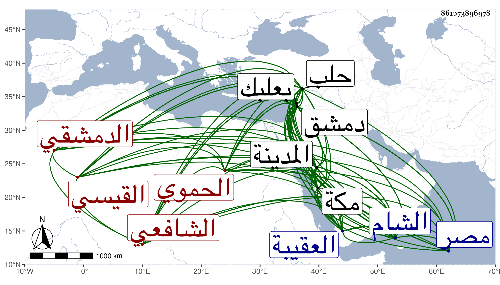

0902Sakhawi.DawLamic.ITO20230111-ara1.EIS1600.861073896978
Biography ID: 861073896978
215
محمد بن عبد الله بن محمد بن أحمد بن مجاهد بن يوسف بن محمد بن أحمد بن علي الشمس أبو عبد الله بن أبي بكر القيسي الحموي الأصل الدمشقي الشافعي ويعرف بابن ناصر الدين . ولد في العشر الأول من المحرم سنة سبع وسبعين وسبعمائة بدمشق ونشأ بها فحفظ القرآن وعدة مختصرات واشتغل قليلا وحصل وفضل وتفقه واعتنى بهذا الشأن وتخرج فيه بابن الشرائحي ولازمه مدة وكذا انتفع في الطلب بمرافقة الصلاح الأقفهسي وحمل عن شيوخ بلده والقادمين إليها بقراءته وقراءة غيره الكثير وكتب الطباق وارتحل لبعلبك وغيرها ، وسافر بأخرة صحبة تلميذه النجم بن فهد المكي إلى حلب وقرأ على حافظها البرهان بعض الأجزاء وكذا سمع من ابن خطيب الناصرية وحج قبل ذلك وسمع بمكة من الجمال بن ظهيرة وغيره بها وكذا بالمدينة النبوية وما تيسرت له الرحلة إلى الديار المصرية وأتقن هذا الفن حتى صار المشار إليه فيه ببلده وما حولها وخرج وأفاد ودرس وأعاد وأفتى وانتقى وتصدى لنشر الحديث فانتفع به الناس ، وحدث بالكثير في بلده وحلب وغيرها من البلاد بل حدث هو وشيخنا معا في دمشق بقراءته بجزء أبي الجهم وامتنع شيخنا من ذلك إلا إن أخبر الجماعة بسنده فما أمكنته المخالفة ولكنه اقتصر على الأخبار ببعض شيوخه فيه دون استيفائهم أدبا وأخذ عنه الأماثل وربما تدرب به في الطلب وشارك في العلوم وأملى . ومن شيوخه أبو هريرة بن الذهبي ومحمد بن محمد بن عبد الله بن عمر بن عوض ورسلان الذهبي وأبو الفرج بن ناظر الصاحبة وعبد الرحمن بن أحمد بن المقداد القيسي ومحيي الدين الرحبي والشهاب أحمد بن علي الحسيني والبدر بن قوام وابن أبي المجد وابن صديق وعمر البالسي وأبو اليسر بن الصائغ وابن منيع ومن يطول إيراده كالبلقيني والصدر المناوي وغيرهما ممن قدم دمشق لا ابن الملقن بل كان يذكر أنه سمع وهو بالمكتب من المحب الصامت ، وأجاز له التنوخي وأبو الخير بن العلائي ومريم ابنة الأذرعي ومعين المصري . ومن تصانيفه طبقات شيوخه وجعلهم ثمان طبقات وجامع الآثار في مولد المختار ثلاثة أسفار ومورد الصادي في مولد الهادي في كراسة واللفظ الرائق في مولد خير الخلائق أخصر من الذي قبله ومنهاج الأصول في معراج الرسول وإطفاء حرقة الحوبة بالباس خرقة التوبة واللفظ المحرم بفضل عاشوراء المحرم ومجلس في فضل يوم عرفة وافتتاح القاري لصحيح البخاري ومجلس في ختمه وآخر في ختم مسلم وآخر في ختم الشفا وبرد الأكباد عن فقد الأولاد وقال فيه :
| يا باكيا ميته في الحي يندبه | قد عمه وجده من فقد الأولاد |
| إن كنت ذا كبد حرى اصطبر برضى | فالصبر خير وفيه برد الأكباد |
وتنوير الفكرة في حديث بهز بن حكيم في حسن العشرة ومسند تميم الداري وترجمة حجر بن عدي الكندي والإملاء الأنفس في ترجمة عسعس واتحاف السالك براوة الموطأ عن ملك وتوضيح المشتبه في أسماء الرجال وغيرها في ثلاثة أسفار كبار والأعلام بما وقع في مشتبه الذهبي من الأوهام وأرجوزة سماها عقود الدرر في علوم الأثر وشرحها في مطول ومختصر وأخرى في الحفاظ وشرحها أيضا وبديعة البيان عن موت الأعيان نظم أيضا في ألف بيت وشرحها وسماه التبيان لبديعة البيان وعرف العنبر في وصف المنبر وبواعث الفكرة في حوادث الهجرة نظم أيضا ومنهاج السلامة في ميزان يوم القيامة وريع الفرع في شرح حديث أم زرع في كراريس وزوال البوسى عمن أشكل عليه حديث تحاج آدم وموسى والصلبة اللطيفة لحديث البضعة الشريفة عليها السلام والتلخيص لحديث ربو القميص ونفحات الأخيار من مسلسلات الأخبار في مجلد وأحاديث ستة في معان ستة من طريق رواة ستة عن حفاظ ستة من مشايخ الأئمة الستة بين مخرجها ورواتها ستة ، والانتصار لسماع الحجار ورفع الدسيسة بوضع حديث الهريسة وكتاب الأربعين المتباينات المتون والإسناد ومعجم شيوخه وخطب في مجلد وغير ذلك كالرد الوافر على من زعم أن من أطلق على ابن تيمية أنه شيخ الإسلام كافر قرضه له الأئمة كشيخنا وهو أحسنهم والعلم البلقيني والتقهني والعيني والبساطي والمحب بن نصر الله وخلق وحدث به غير مرة ، وقام عليه العلاء البخاري لكون التصنيف في الحقيقة رد به عليه فإنه لما سكن دمشق كان يسأل عن مقالات ابن تيمية التي انفرد بها فيجيب بما يظهر من الخطأ فيها وينفر عنه قلبه إلى أن استحكم أمره عنه وصرح بتبديعه ثم بتكفيره ثم صار يصرح في مجلسه بأن من أطلق على ابن تيمية أنه شيخ الإسلام يكفر بهذا الإطلاق واشتهر ذلك فجمع صاحب الترجمة في كتابه المشار إليه كلام من أطلق عليه ذلك من الأئمة الأعلام من أهل عصره من جميع المذاهب سوى الحنابلة بحيث اجتمع له شيء كثير وحينئذ كتب العلاء إلى السلطان كتابا بالغ فيه في الحط ولكنه لم يصل بحمد الله إلى تمام غرضه وساس القضية الشهاب ابن المحمرة قاضي الشام حينئذ مع كونه ممن أنكر عليه في فتياه تصنيفه المذكور وتبعه التقي بن قاضي شهبة حتى أن البلاطنسي رجع عن الأخذ عنه بل والرواية عنه بعد أن كان ممن تتلمذ له كل ذلك عنادا ومكابرة وكانت حادثة شنيعة في سنة خمس وثلاثين وهلم جرا ، ولكن لما كان شيخنا بدمشق حدث بتقريضه للمصنف المشار إليه ولم يلتفت إلى المتعصبين . وقد ولي مشيخة دار الحديث الأشرفية وبالجملة فكان إماما علامة حافظا كثير الحياء سليم الصدر حسن الأخلاق دائم الفكر متواضا محببا إلى الناس حسن البشر والود لطيف المحاضرة والمحادثة بحيث لا تمل مجالسته كثير المداراة شديد الاحتمال قل أن يواجه أحدا بمكروه ولو آذاه ، جود الخط على طريقة الذهبي حتى صار يحاكي شطه غالبا بحيث بيع بعض الكتب التي بخطه ورغب المشتري فيه لظنه أنه خط الذهبي ثم بان الأمر ، وكتب به الكثير راغبا في إفادة الطلبة شيوخ بلده بل ويمشي هو معهم إلى السماع عليهم مع كونه هو المرجع في هذا الشأن وربما قرأ لهم هو . وقد سئل شيخنا عنه وعن البرهان الحلبي فقال ذلك نظره قاصر على كتبه وأما هذا فيحوش وأثنى عليه في غير موضع فقرأت بخطه : كتب إلى الشيخ الإمام العالم الحافظ مفيد الشام فذكر شيئا ، وفي موضع آخر : الشيخ الإمام المحدث حافظ الشام بل كتب له بالثناء على مصنفه شرح عقود الدرر كما أثبته في الجواهر واعتذر عن الحواشي التي أفادها حسبما جردتها بطريقة زائدة في الأدب . وذكره في معجمه فقال : وسمع من شيوخنا وممن مات قبل أن أدخل من الدمشقيين وأكثر ثم لما خلت الديار من المحدثين صار هو محدث تلك البلاد أجاز لنا غير مرة ، قال وشارك في العلوم ونظر في الأدب حتى نظم الشعر الوسط ، ولكنه أغفل إيراده في أنبائه . وكذا أثنى عليه البرهان الحلبي بقوله : الشيخ الإمام المحدث الفاضل الحافظ خرج الأربعين المتباينة وله أعمال غير ذلك ورد على مشتبه الذهبي وكتابه فيه فوائد وقد اجتمعت به فوجدته رجلا كيسا متواضعا من أهل العلم وهو الآن محدث دمشق وحافظها نفع الله به المسلمين وابن خطيب الناصرية فقال : رأيته إنسانا حسنا محدثا فاضلا وهو محدث دمشق وحافظها والمقريزي فقال : طلب الحديث فصار حافظ بلاد الشام بغير منازع وصنف عدة مصنفات ولم يخلف في الشام بعده مثله . والمحب بن نصر الله فقال فيما قرأته بخطه : ولم يكن بالشام في علم الحديث آخر مثله ولا قريب منه وممن أخذ عنه التقي بن قندس وتلميذه العلاء المرداوي . وقال الإمام الحافظ الناقد الجهبذ المتقن المفنن حافظ عصره وراوية زمانه وعلامته له التصانيف الحسنة والنظم المتوسط . وكذا ذكره التقي بن فهد في ذيل طبقات الحفاظ له وآخرون واتفقوا على توثيقه وديانته ، وشذ البقاعي جريا على عادته فقال : وكان محدثا مشهورا بالحديث . ووصفه شيخنا بالحفظ وهو عند كثير من الناس مشهور بدين ، واطلعت أناله على تزوير وكشط وتغيير في حق مالي كبير في غير ما مكتوب انتهى . والله حسيبه وقد أوردت في معجمي من نظمه أشياء ومنه :
| وعشرة خير صحب بالجنان أتى | وعد النبي لهم سردا بلا خلل |
| عتيق عثمان عامر طلحة عمر ال | زبير سعد سعيد وابن عوف على |
وهو في عقود المقريزي باختصار وأنه كتب الخط الجيد وصار حافظ بلاد الشام بغير منازع ولم يخلف هناك مثله . مات في ربيع الثاني على المعتمد سنة اثنتين وأربعين بدمشق مسموما فإنه خرج مع جماعة لقسم قرية من قرى دمشق فسمهم أهلها وحصلت له الشهادة ودفن بمقابر العقيبة عند والده ولم يخلف في هذا الشأن بالشام بعده مثله بل سد الباب هناك رحمه الله وإيانا .
